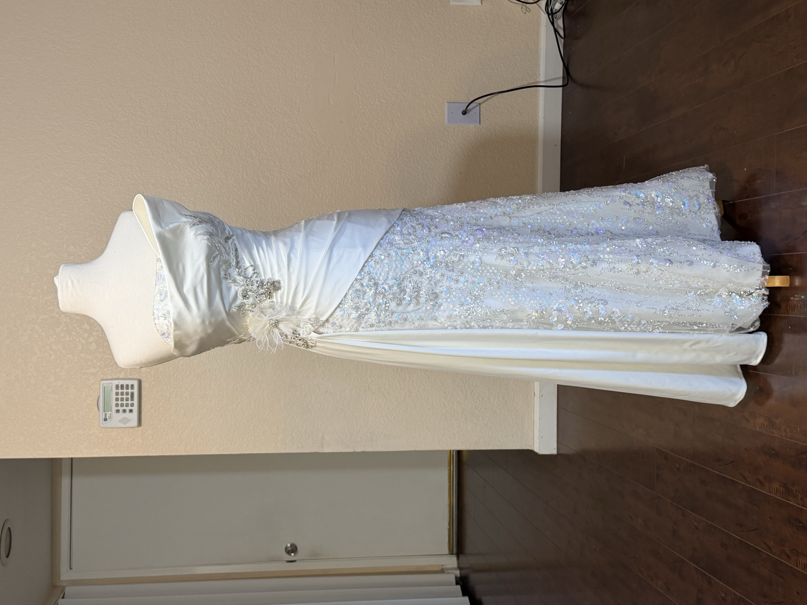

Screens are not fabric
Every swatch here is an approximation; phones and monitors all shift color a little. Before anything is cut, you will see the real fabric swatch in the studio or we can mail one to you.

Custom Gown Colors
Every custom gown we make can be sewn in the color you choose. Browse by fabric below, tap a swatch to select it, and send us the name and code with your quote request.
Every swatch here is an approximation; phones and monitors all shift color a little. Before anything is cut, you will see the real fabric swatch in the studio or we can mail one to you.
The same color name reads differently in chiffon, satin or sequin. Decide on the fabric that suits your design, then pick the shade within it, and send us both the name and the code.
These are the most popular colors; the full range is larger. Send us a photo of the color you have in mind and we will find the closest match, often an exact one.
Chiffon · 74 colors
Light, airy and softly draped. Our widest range, and the most popular choice for flowing skirts and overlays.
Satin · 53 colors
Smooth with a gentle sheen, and structured enough for clean lines and a polished finish.
Silk Satin · 11 colors
A heavier, more luminous satin with a luxurious hand and a fluid drape.
Sequin · 28 colors
All-over sequins on a mesh base, for shimmer that catches every light in the room.
Tulle · 17 colors
Fine, sheer netting for layered skirts, overlays, veils and soft volume.
Double FDY · 25 colors
A soft, opaque double-layer weave with a matte, elegant drape that holds its shape.
Tell us the fabric, the color name and its code, along with a photo of the dress you love. Our custom-gown consultation is free, and you see a preview video before anything is sewn.